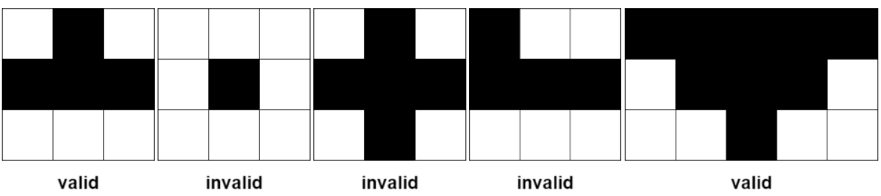
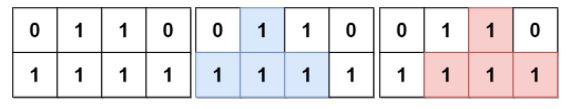
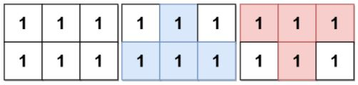
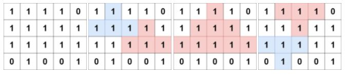

| Category | Difficulty | Likes | Dislikes |
|---|---|---|---|
| Algorithms | Hard | 393 | 21 |
google
A farmer has a rectangular grid of land with m rows and n columns that can be divided into unit cells. Each cell is either fertile (represented by a 1) or barren (represented by a 0). All cells outside the grid are considered barren.
A pyramidal plot of land can be defined as a set of cells with the following criteria:
1 and all cells must be fertile.(r, c) be the apex of the pyramid, and its height be h. Then, the plot comprises of cells (i, j) where r <= i <= r + h - 1 and c - (i - r) <= j <= c + (i - r).An inverse pyramidal plot of land can be defined as a set of cells with similar criteria:
1 and all cells must be fertile.(r, c) be the apex of the pyramid, and its height be h. Then, the plot comprises of cells (i, j) where r - h + 1 <= i <= r and c - (r - i) <= j <= c + (r - i).Some examples of valid and invalid pyramidal (and inverse pyramidal) plots are shown below. Black cells indicate fertile cells.

Given a 0-indexed m x n binary matrix grid representing the farmland, return the total number of pyramidal and inverse pyramidal plots that can be found in grid.
Example 1:

Input: grid = [[0,1,1,0],[1,1,1,1]]
Output: 2
Explanation: The 2 possible pyramidal plots are shown in blue and red respectively.
There are no inverse pyramidal plots in this grid.
Hence total number of pyramidal and inverse pyramidal plots is 2 + 0 = 2.Example 2:

Input: grid = [[1,1,1],[1,1,1]]
Output: 2
Explanation: The pyramidal plot is shown in blue, and the inverse pyramidal plot is shown in red.
Hence the total number of plots is 1 + 1 = 2.Example 3:

Input: grid = [[1,1,1,1,0],[1,1,1,1,1],[1,1,1,1,1],[0,1,0,0,1]]
Output: 13
Explanation: There are 7 pyramidal plots, 3 of which are shown in the 2nd and 3rd figures.
There are 6 inverse pyramidal plots, 2 of which are shown in the last figure.
The total number of plots is 7 + 6 = 13.
Constraints:
m == grid.lengthn == grid[i].length1 <= m, n <= 10001 <= m * n <= 105grid[i][j] is either 0 or 1.